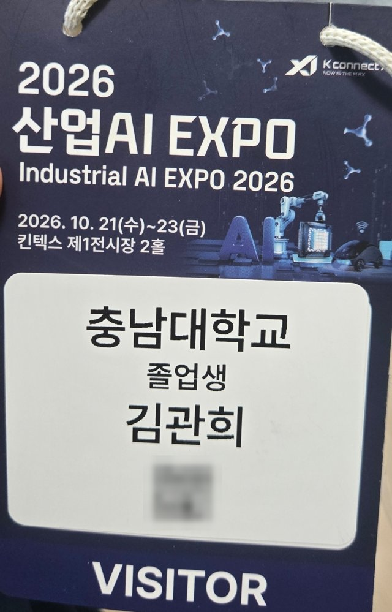
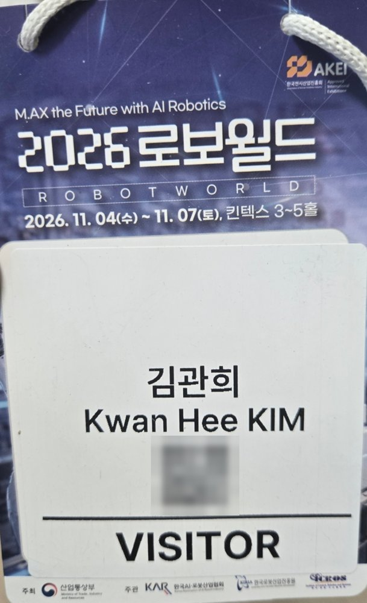

Last modified
2026 산업AI EXPO
관람 2026.10.22(목) · 일산 킨텍스 제1전시장 2홀 (행사 기간 2026.10.21~10.23) · 행사 홈페이지

관람 이유
로보틱스를 공부하며 실생활에 적용되고 있는 AI·로보틱스 전시회가 눈에 들어왔습니다. AI가 제조업에 어떻게 반영되고 있는지 직접 경험하고, 컨퍼런스를 청강하고자 관람했습니다.
행사 소개
- 목적: 산업계 AI 혁신 생태계 구축 및 확산, AX 활용 실증사례와 업종별·기술별 AI 특화 기술·제품·솔루션 발굴 및 소개, 산업별 AX 비즈니스 네트워킹
- 품목: AI-Tech & Orchestration(AI 인프라·플랫폼, Embodied AI, Agentic AI, AI Orchestration), Industrial AI(AI 제조·반도체·에너지·유통&물류·바이오&헬스케어·모빌리티), 지역 AX Hub
- 산업통상자원부의 산업AI 플랫폼 ‘K Connect AI’와 연계해 전시와 함께 컨퍼런스, 수출상담회, 투자·오픈이노베이션 프로그램 운영
본 것 · 느낀 점
산업AI EXPO에서는 정말 많은 업체가 AI 솔루션을 내놓고 있었습니다. 다만 수가 많은 만큼 서로 비슷해 보이기도 했는데, 제 견문이 아직 부족해서일 수도 있습니다. 한편 이런 솔루션이 데이터를 쌓아 가며 개선될 수 있다는 점도 보였습니다.
2026 로보월드
관람 2026.11.05(목) · 일산 킨텍스 3~5홀 (행사 기간 2026.11.04~11.07) · 행사 홈페이지

관람 이유
로봇을 직접 보고, 실제 산업에 적용되는 로봇에 대한 견문을 넓히고자 관람했습니다.
행사 소개
- 국내 최대 규모의 로봇 전문 전시회로, 로봇 공급기업과 수요기업을 잇는 비즈니스 매칭과 최신 로봇·AI 기술·산업 동향 소개를 목적으로 매년 열립니다.
- 품목: 제조업용 로봇(본체·부품·스마트제조 솔루션·응용 및 SW), 서비스용 로봇(본체·부품·솔루션·응용 및 SW), 휴머노이드·협동로봇·자율주행로봇(AMR)·웨어러블·헬스케어·푸드테크 로봇
- 부대행사: 휴머노이드 특별관·푸드테크관, 비즈니스 구매상담회, 해외 바이어 수출상담회, 컨퍼런스·해외진출 전략 세미나, 4족보행로봇 챌린지 경진대회, Global Scale up Day
본 것
로보월드에는 로봇이 많았고, 휴머노이드와 다양한 AMR(자율주행 이동로봇)의 형상과 시연 사례를 볼 수 있었습니다.
직무·관심 분야와의 연결
자동화 공정, 로봇, AMR, 그리퍼(물체를 집는 로봇 손 장치), 조작 화면(UI), GPU처럼 로봇에 들어가는 연산 장치는 제가 프로젝트에서 직접 다뤄 봤고 강점이라고 생각하는 요소입니다. 기업들이 이 요소들을 실제 산업에서 어떻게 활용하고 어떤 점을 강조하는지가 가장 궁금해 두 전시회 관람을 신청했습니다. 그래서 두 전시회에서 실제 산업 분야의 기업들을 둘러보며 브로슈어를 모으고, 각 회사의 제품과 스펙, 적용 분야·시연·부스 디자인을 보면서 어떤 기술을 어떤 방식으로 내세우는지 살폈습니다.